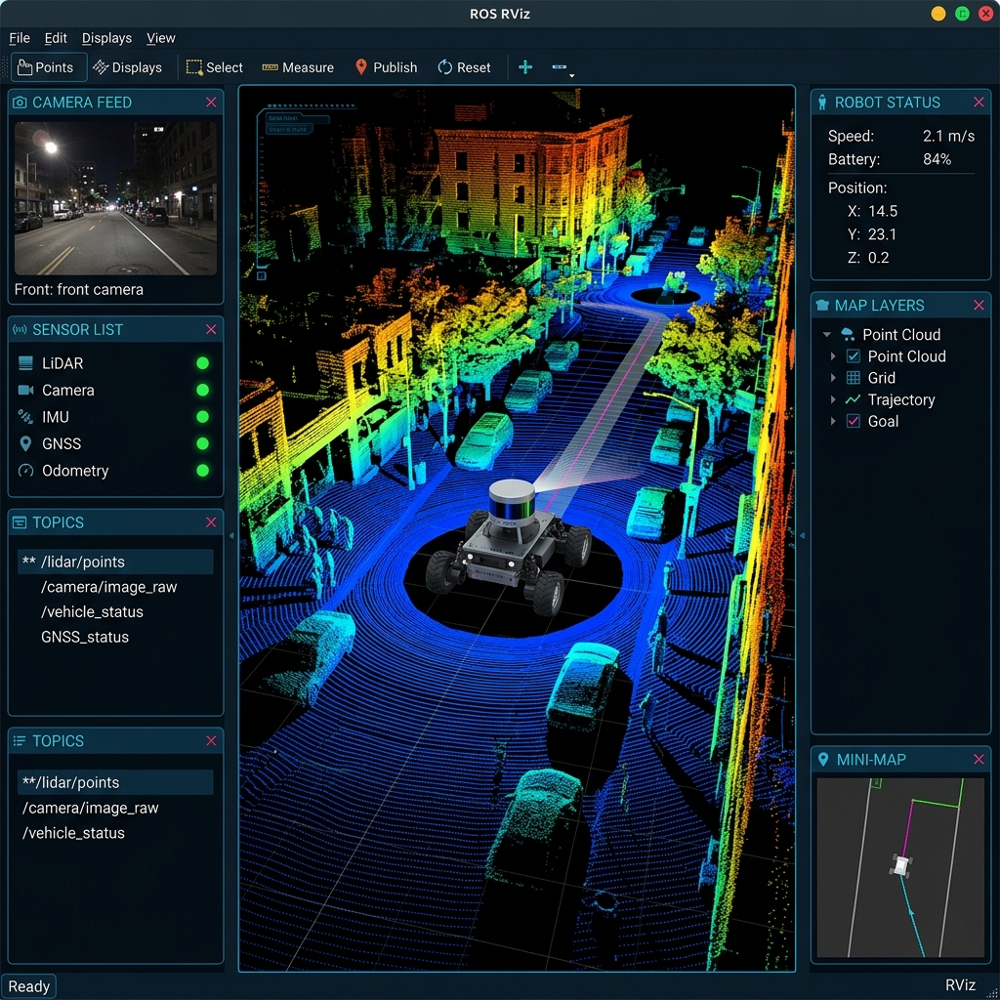
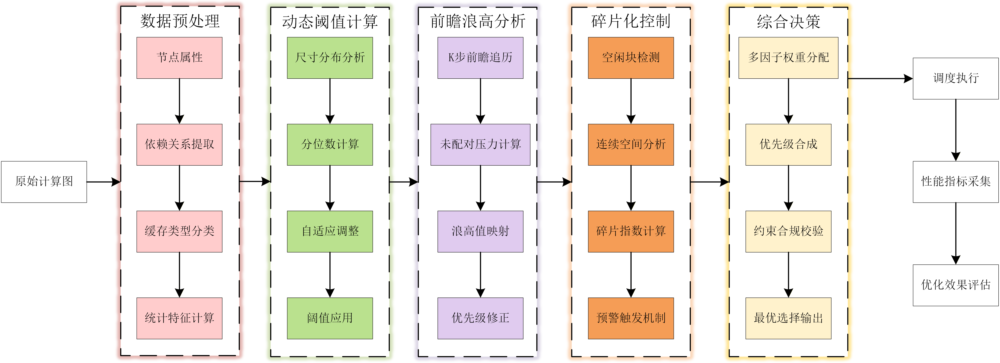
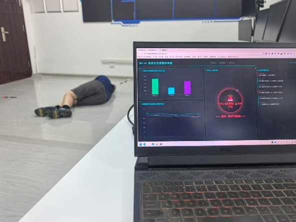
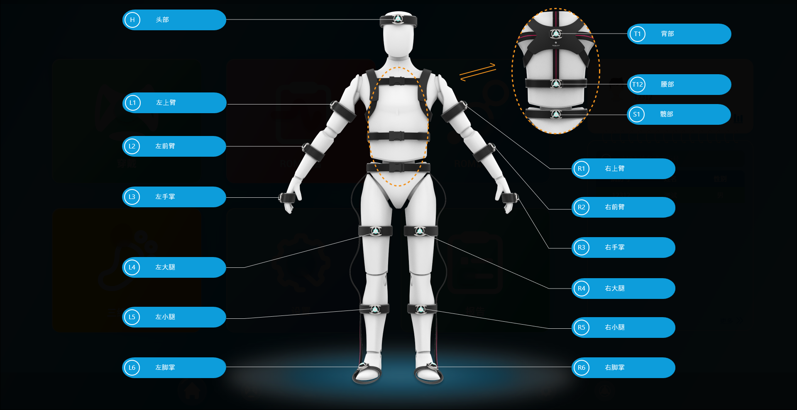

专业技能
💻 编程与底层开发
🤖 机器人与激光感知
🧠 人工智能与机器视觉

ROS / 算法应用工程师 (泄漏检测型移动巡检小车)
陕西海砥装备科技有限公司 (西工大科技成果转化企业)
参与工业及密闭潜在泄漏场景巡检小车的自主导航、3D SLAM 建图及动态避障算法研发。
- 3D激光建图与去畸变：针对工厂/密闭等泄漏检测复杂环境，部署 LIO-SAM 紧耦合 SLAM 算法；融合高频 IMU 惯导数据消除颠簸地面引起的点云运动畸变与分层拖尾，构建高精度三维环境点云地图。
- 局部规划与避障调优：针对阿克曼转向巡检小车的最小转弯半径物理约束，配置并调优 TEB 局部规划器；优化 Footprint 轮廓与 Costmap 膨胀层代价权重，使狭窄复杂通道避障通过率达 95%+。
- 位姿融合与实车部署：使用 C++ 编写 ROS 底盘通信节点；基于 EKF 融合轮速计与 IMU 数据实现无 GNSS 环境下的连续位姿估计，结合 3D-VFH 算法进行空间向量场评估与动态平滑避障，实现复杂场景下全自主移动检测。
“感语智契”多模态驱动智能陪伴机器狗研发
具身智能多模态四足机器人系统
集成本地大模型语义理解、边缘视觉目标检测与全栈移动端低延迟图传的多模态交互陪伴型四足机器人。
- 具身认知与全流程交互：针对智能陪伴交互需求，接入本地部署的 DeepSeek 大模型构建“语音输入 -- 意图理解 -- 结构化 JSON 指令提取 -- 机器狗运动控制”全闭环链路；融合 MediaPipe 实现手势姿态控制与足球动态追踪。
- 端侧感知与系统集成：在嵌入式端侧部署轻量化 YOLO 实现实时目标检测；设计低延迟 TCP/UDP 通信协议实现上位机与端侧的高效多进程数据交互与图传控制。

通用神经网络处理器核内调度算法研究
通用加速器 (NPU) 核内算子调度优化
针对深度学习加速芯片核内算子在处理 FlashAttention 等大算子时的“内存墙”瓶颈，应用拓扑分析与启发式运筹学理论设计片上高效算子调度管理方案。
- 计算图拓扑与内存建模：针对通用神经网络处理器 (NPU) 处理 FlashAttention 等大算子时的内存墙瓶颈，解析 JSON 计算图构建 DAG 拓扑排序，精准建模张量生命周期与片上 L0/L1 Cache 占用。
- 启发式调度与仿真验证：设计基于优先级的核内算子调度策略与 Spill 内存溢出优化算法，相较于传统线性顺序执行基线（Sequential Baseline）显著降低 Cache Miss 并提高片上内存利用率；基于 Python GUI 开发交互式调度验证器，动态评估算子执行耗时。

“银发守望”基于 Wi-Fi CSI 与边缘计算的跌倒检测系统
非接触式养老监护与边缘计算
打造非接触式独居老人跌倒检测系统。高频采集 Wi-Fi 信道状态信息 (CSI)，结合 1D-CNN + LSTM 深度学习模型实现 98.2% 高准确率跌倒判断与秒级全栈报警。
- 信号采集与降噪预处理：针对居家养老非接触监护场景，基于 ESP32 采集高频 Wi-Fi CSI（信道状态信息）时序数据；设计巴特沃斯低通滤波器滤除高频噪声，结合主成分分析（PCA）降维提取核心动态特征。
- 模型训练与端到端闭环：基于 PyTorch 搭建 1D-CNN + LSTM 深度时序分类模型，实现高精度人体姿态识别与跌倒预警，分类准确率达 98.2%；部署 Windows Server 后端与多端监控大屏/App，实现闭环秒级实时报警。

人体运动姿态解算与足底压力 CNN 分类系统
IMU 传感器姿态融合与深度学习步态分析
基于 9 轴 IMU 传感器与压力分布矩阵，利用 Mahony AHRS 姿态融合算法与 2D CNN 模型实现步态特征提取与异常足型智能识别。
- 姿态解算与去噪：基于 C++ 与 Python 实现 9 轴 IMU 数据的 Butterworth 低通滤波降噪，并使用 Mahony AHRS 姿态融合算法结合校准矩阵，动态解算出高精度的解剖学欧拉角与四元数。
- 步态事件自适应识别：设计并实现了基于滚动标准差和波峰提取的自适应阈值步态检测算法，可识别 Heel-Strike、Toe-Off 关键事件并进行步态参数（步频、步速、双支撑相占比）统计，集成转身动作防误判算子。
- 足底压力分类模型：基于 PyTorch 搭建用于足底压力灰度图分类的 2D CNN 网络，通过自定义 DataLoader 进行数据增强与 Kaiming 初始化，实现扁平足等异常足型的自动识别；并实现了层特征图的可视化引擎。
在线简历
这是我的个人简历网页版。您也可以直接下载我的 PDF 格式简历。
张颢震
控制与导航算法工程师
教育背景
- 研究方向：多目标与群智能优化算法、机器人三维路径规划
- 核心课程：矩阵论 (95分)、随机过程 (89分)、计算智能 (87分)、神经网络及其应用 (87分)、最优控制
- 专业背景：机器人控制、运动学与动力学建模、嵌入式底层开发、传感器融合
专业技能
- 规划与感知：精通启发式/群智能优化算法、三维路径规划；熟练使用 ROS / ROS2；掌握 3D SLAM 建图 (LIO-SAM) 与 YOLO 目标检测。
- 编程与开发：熟练掌握 C/C++（多线程编程、性能优化）与 Python，熟练掌握 Linux 底层开发环境、编译工具链及 Shell 脚本。
- 嵌入式硬件：熟练使用 ESP32 进行无线传感与边缘开发，掌握 CAN / RS485 工业总线通信协议及底层驱动开发。
- 英语水平：大学英语六级 (CET-6 450分) | 大学英语四级 (CET-4) | 具备熟练的英文前沿文献精读与学术论文撰写能力。
竞赛与学业荣誉
| 2025-2026学年硕士研究生学业奖学金 (省级一等) | 省级一等奖学金 | 2026.09 |
| “数智中原”河南省电子设计竞赛 | 省级一等奖 | 2026.09 |
| 第二十一届中国研究生电子设计竞赛 | 全国总决赛三等奖 | 2026.08 |
| 第二十二届中国研究生数学建模竞赛 | 全国二等奖 | 2025.12 |
| 第七届中国研究生人工智能创新大赛 | 全国三等奖 | 2025.10 |
| 2024-2025学年硕士研究生学业奖学金 (省级二等) | 省级二等奖学金 | 2025.10 |
| “数智中原”河南省电子设计竞赛 | 省级二等奖 | 2025.10 |
| 第二十届中国研究生电子设计竞赛 | 华中赛区一等奖 | 2025.07 |
| 第二十一届中国研究生数学建模竞赛 | 全国三等奖 | 2024.12 |
| 西安工程大学本科毕业考核 | 校级优秀毕业设计 (优秀毕业论文) | 2023.06 |
| 西安工程大学入学评优 | 优秀新生奖学金 (校级) | 2019.10 |
学术成果
- [1] TTransCVMD: Hybrid Wind Power Forecasting Method Based on Improved Variational Mode Decomposition and Transformer. 中国自动化大会 (CAC 2026 已录用 / CAA 主办，Oral 口头汇报). [导师一作，本人二作 (学生一作)] GitHub 源码 ↗
结合豪猪优化改进CVMD与双分支Transformer并行的零泄漏短期风电功率预测模型，有效抑制多步预测累积误差。 - [2] CMOEA-LEO: Constrained Multiobjective Evolutionary Algorithm with Language-Model-Guided Evolutionary Orchestration. 进化计算权威期刊在投 (Under Review). [导师一作，本人二作 (学生一作)]
提出首个大模型驱动的约束多目标在线求解器自适应编排与架构选择框架，实现跨问题域高效求解。 - [3] TSMCCEA: A Three-Stage Multi-Classification Cooperative Evolutionary Algorithm for Constrained Multi-objective Optimization. IEEE TETCI 在投 (Under Review). [导师一作，本人二作 (学生一作)]
提出三阶段自适应状态驱动的多分类协同约束多目标进化算法，动态平衡全局探索与约束利用。 - [4] PDKT-DMOEA: Dynamic Multi-Objective Evolutionary Algorithm with Memory-Assisted Prediction-Driven Knowledge Transfer. Expert Systems with Applications (ESWA 在投). [核心合作作者]
融合贝叶斯网络混合概率模型与自适应知识迁移机制，有效解决动态环境 Pareto 前沿漂移追踪难题。
项目与工程实践经验
- 3D激光建图与去畸变：针对密闭工厂巡检环境，部署 LIO-SAM 紧耦合 SLAM 算法；实现激光与 IMU 硬件级时间同步与外参标定，有效消除非结构化颠簸地面点云分层拖尾与长廊特征退化问题。
- 局部规划与避障调优：针对阿克曼底盘非完整约束，调优 TEB 局部规划器；通过自适应动态障碍物代价权重优化，彻底解决狭窄直角弯通道下的局部极小值死锁与轨迹振荡，避障通过率达 95%+。
- 位姿融合与实车部署：使用 C++ 编写 ROS 底盘通信节点；基于 EKF 融合轮速计与 9 轴 IMU 解决车轮打滑引起的累计漂移，结合 3D-VFH 空间向量场算法实现复杂工况下无 GNSS 全自主平滑巡检。
- 具身认知与全流程交互：接入本地部署大模型构建意图理解闭环；设计 Few-Shot JSON Schema 校验与语法容错机制，彻底解决大模型幻觉与非结构化输出导致的下位机死机问题；结合 MediaPipe 与 One-Euro 滤波实现无抖动手势控制。
- 端侧感知与通信架构：在端侧部署轻量化 YOLO 实现低延迟动态追踪；自主设计 环形缓冲区与心跳保活协议，解决弱网高并发下的图传丢包与控制指令拥塞，实现毫秒级端云实时交互。
- 计算图拓扑与内存建模：针对通用神经网络处理器 (NPU) 处理 FlashAttention 等大算子的内存墙瓶颈，构建 DAG 拓扑排序与 张量生命周期区间图，精准建模片上 L0/L1 Cache 占用与访存冲突。
- 启发式调度与溢出优化：设计 基于未来复用距离的 Belady/LFU 优先级调度与 Spill 换出算法，相较于线性顺序执行基线显著降低 Cache Miss 并提高片上内存利用率；基于 Python GUI 开发交互式调度验证器动态仿真。
- 信号采集与降噪预处理：针对居家非接触监护场景，基于 ESP32 采集高频 Wi-Fi CSI 时序数据；设计 相位解缠绕与双频低通滤波，彻底消除载波频偏 (CFO) 与室内静态多径干扰，结合 PCA 降维提取核心动态特征。
- 时序建模与全栈闭环：基于 PyTorch 搭建 1D-CNN + BiLSTM 并引入通道注意力机制，有效区分日常坐卧与真实突发跌倒（解决假阳性误报），分类准确率达 98.2%；部署 Windows Server 与 WebSocket 毫秒级预警大屏。
🔬 算法与控制系统在线实验室
这是一个完全由原生 JavaScript 实现的算法交互仿真，用以直观展示我的数学、运动学建模与控制理论算法实现功底。
RRT* (快速探索随机树) 机器人路径规划
展示机器狗在复杂网格地图中的障碍规避算法。在左侧画布中，您可以直接点击或拖拽鼠标绘制黑色障碍物墙壁，然后点击“运行规划”。
算法将从起点（绿色）出发，向随机方向快速建立探索树，并在检测到连通终点（红色）后，通过 Rewire 算子进行渐近线段路径优化，找到最优规避路线。
无人机一维高度 PID 稳定控制器
模拟无人机通过高度传感器进行姿态控制。红线代表期望目标高度（您可以在画布上任意点击直接修改目标高度）。
调节滑块，实时观察不同的 PID 增益系数如何影响无人机的超调量、收敛时间及震荡衰减。
3D 激光雷达点云仿射投影与矩阵变换
《矩阵论》95分硬核展示：无需 Three.js 库，本模块基于纯原生 JavaScript 算法实现三维坐标点集（正方体与四足机器狗骨架）向二维屏幕投影的计算。
实现了三维空间欧拉角旋转矩阵的运算、视口仿射变换投影（3D Projection）、消隐渲染以及基于深度 $z$ 的点大小与透明度衰减渲染（仿激光雷达反射强度效果）。
请在画布上按住鼠标左键并拖拽，即可实时计算相机观察旋转矩阵，实现点云的多角度旋转互动。
Wi-Fi CSI 信道状态信息实时滤波算法仿真
信号处理功底展示：模拟 Wi-Fi CSI 在室内人体定位与跌倒检测中的原始高噪信号采集。
您可以调节下方滑块，直观对比一维卡尔曼滤波 (Kalman Filter) 与滑动平均滤波 (Moving Average) 对高噪时序信号的降噪效果。
联系方式
寻找西安的算法与机器人研发机会
我具备极强的抗压与攻坚能力，非常期待能加入硬核军工院所、机器人/四足狗研发企业或自动驾驶团队中，通过扎实的算法与代码实现在西安落地！